품질경영기사 (2022-03-05 기출문제)
1과목: 실험계획법
1. Y제품을 조건 AiBj에서 각각 100회씩 검사한 결과 부적학품이 다음과 같았다. 요인 A의 제곱합(SA)는 약 얼마인가?
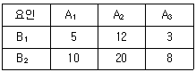
- 0.94
- 1.04
- 0.14
- 1.24
(정답률: 40%)

2. 33의 1/3 반복에서 I = ABC2을 정의대비로 9회 실험을 하였다. 이에 대한 설명으로 틀린 것은?
- C의 별명 중 하나는 AB 이다.
- A의 별명 중 하나는 AB2C 이다.
- AB2의 별명 중 하나는 AB 이다.
- ABC의 별명 중 하나는 AB 이다.
(정답률: 54%)
3. 수준이 기술적인 의미를 갖지 못하며 수준의 선택이 랜덤으로 이루어지는 요인은?
- 모수요인
- 별명요인
- 변량요인
- 보조요인
(정답률: 71%)
4. 반복 없는 22형 요인실험에서 주효과와 교호작용을 구하는 식으로 틀린 것은?
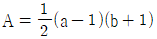
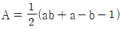
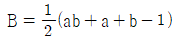
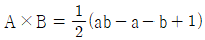
(정답률: 58%)
5. 오차항 eij의 가정으로 틀린 것은?
- E(eij) = eij
- Var(eij) = σe2
- eij은 분산 σe2은 E(eij2) 이다.
- eij는 랜덤으로 변하는 값이다.
(정답률: 34%)
6. 요인 수가 3개(A, B, C)인 반복 있는 3요인 실험에서 요인의 수준수를 각각 l, m, n 이고, 반복수가 r 이다. A, B 요인은 모수이고, C요인이 변량일 때, 평균제곱의 기댓값 E(VA)를 구하는 식으로 맞는 것은?
- σe2 + mnrσA2
- σe2 + mrσA×C2 + mnrσA2
- σe2 + rσA×B×C2 + mnrσA2
- σe2 + rσA×B×C2 + mrσA×C2 + mnrσA2
(정답률: 45%)
7. yi•은 i 번째 처리 수준에서 측정값의 합을 나타낸다. 다음 중 대비(contrast)가 아닌 것은?
- c = y1• + y3• - y4• - y5•
- c = 4y1• - 3y3• - y4• - y5•
- c = 3y1• + y2• - 2y3• - 2y4•
- c = -y1• + 4y2• - y3• -y4• - y5•
(정답률: 57%)
8. 수준수 l=4, 반복수 m=3인 모수모형 1요인치 시험에서
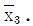
= 8.92, ST = 2.383, SA= 2.011 이었다. 이 때 μ(A3)를 유의수준 0.01로 구간추정하면 약 얼마인가? (단, t0.99(8) = 2.896, t0.995(8)= 3.355 이다.)- 8.5⑤ ≤ μ(A3) ≤ 9.335
- 8.558 ≤ μ(A3) ≤ 9.232
- 8.558 ≤ μ(A3) ≤ 9.282
- 8.608 ≤ μ(A3) ≤ 9.232
(정답률: 34%)
9. 직교배열표에 대한 설명 중 틀린 것은?
- 3수준계의 가장 작은 직교배열표는 L12(34)이다.
- 2수준 직교배열표를 이용하여 4수준 요인도 배치 가능하다.
- 실험의 크기를 확대시키지 않고도 실험에 많은 요인을 짜 넣을 수 있다.
- 2수준 요인과 3수준의 요인이 존재하는 실험인 경우에는 가수준(dummy level)을 만들어 사용한다.
(정답률: 40%)
10. 다음은 1요인 실험에 의해 얻어진 데이터이다. 오차의 제곱합(Se)은 약 얼마인가?
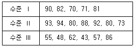
- 120
- 135
- 1254
- 1806
(정답률: 34%)
11. 2요인 실험에서 AiBj에 결측치가 있을 경우 Yates의 결측치
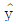
추정공식으로 맞는 것은?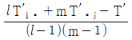
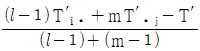
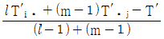
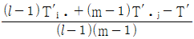
(정답률: 48%)
12. 반복 2회인 2요인 실험에서 요인 A가 4수준, 요인 B가 3수준이면, 유효반복수는 얼마인가? (단, 교호작용은 유의하다.)
- 2
- 3
- 4
- 5
(정답률: 50%)
13. 2×2 라틴방격법의 배열방법의 수는?
- 1
- 2
- 3
- 4
(정답률: 38%)
14. 분할법의 특징으로 틀린 것은?
- 자유도는 일차단위 오차가 이차단위 오차보다 작다.
- A, B 두 요인 중 정도 좋게 추정하고 싶은 요인은 일차단위에 배치한다.
- 일차단위의 요인에 대해서는 다요인 실험을 하는 것보다는 일반적으로 소요되는 원료의 양을 줄일 수 있다.
- 실험을 하는데 랜덤화가 곤란한 경우 예를 들어 일차단위의 수준 변경은 곤란하지만 이차단위 요인 수준 변경이 용이할 때 사용한다.
(정답률: 32%)
15. 난괴법에 관한 설명으로 틀린 것은?
- 결측치가 존재해도 쉽게 해석이 용이하다.
- 분산분석 과정은 반복이 없는 2요인 실험과 동일하다.
- 하나는 모수요인이고, 다른 하나는 변량요인이다.
- xij = μ+ai+bj+eij 인 데이터 구조식을 가지며, 여기서
 과
과  이다.
이다.
(정답률: 53%)
16. 하나의 실험점에서 30, 40, 38, 49(단위 dB)의 반복 관측치를 얻었다. 자료가 망대특성이라면 SN비 값은 약 얼마인가?
- -32.48 dB
- -31.58 dB
- 31.38 dB
- 31.48 dB
(정답률: 57%)
17. 두 변수 x, y에 대한 다음의 데이터로부터 단순회귀분석을 실시하였다. 회귀직선의 기여율은?
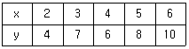
- 0.845
- 0.887
- 0.925
- 0.957
(정답률: 42%)
18. 다음과 같은 L8(27)형 직교배열표에서 E와 교락되어 있는 요인은?
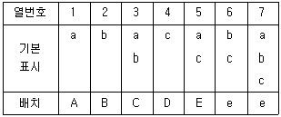
- AC, ABDF, CDE
- BC, DE, ABCDE
- ABCE, AD, BCD
- BD, ACD, ABE, CE, ABD, CD, BE, ACE
(정답률: 50%)
19. A1 수준에 속해 있는 B1과 A2 수준에 속해 있는 B1 은 동일한 것이 아닌 실험설계법은?
- 난괴법
- 지분실험법
- 교락법
- 라틴방격법
(정답률: 34%)
20. 교락법에서 블록과 교락시키는 것은?
- 오차
- 주효과
- 특성치
- 불필요한 고차의 교호작용
(정답률: 40%)
2과목: 통계적품질관리
21. 품질변동 원인 중 우연원인에 해당하지 않는 것은?
- 피할 수 없는 원인이다.
- 점들의 움직임이 임의적이다.
- 작업자의 부주의나 태만, 생산설비의 이상 등으로 인해서 나타난 원인이다.
- 현재의 능력이나 기술 수준으로는 원인규명이나 조치가 불가능한 원인이다.
(정답률: 36%)
22. A자동차는 신차구입 후 5년 이상 자동차를 보유하는 고객의 비율을 추정하기를 원한다. 신뢰수준 95%에서 오차한계가 ±0.⑤로 하기 위해서 필요한 최소의 표본크기는 약 얼마인가?
- 373
- 380
- 382
- 385
(정답률: 13%)
23. 로트별 합격품질한계(AQL) 지표형 샘플링 검사방식(KS Q ISO 2859-1)의 보통검사에서 수월한 검사로 전환할 때 전환점수의 계산방법이 틀린 것은?
- 2회 샘플링검사에서 제1차 샘플에서 로트 합격시 전환점수에 2를 더하고, 그렇지 않으면 0으로 되돌린다.
- 다회 샘플링검사에서 제3차 샘플까지 합격시 전환점수에 3을 더하고, 그렇지 않으면 0으로 되돌린다.
- 합격판정개수 Ac≤1인 1회 샘플링검사에서 로트 합격시 전환점수에 2를 더하고, 그렇지 않으면 0으로 되돌린다.
- 합격판정개수 Ac≥2인 1회 샘플링검사에서 AQL이 1단계 엄격한 조건에서 로트 합격시 전환점수에 3점을 더하고, 그렇지 않으면 0으로 되돌린다.
(정답률: 18%)
24. 지그재그 샘플링(Zigzag Sampling)의 설명으로 맞는 것은?
- 사전에 모집단에 대한 지식이 없는 경우 사용한다.
- 시간적, 공간적으로 일정한 간격을 정해놓고 샘플링한다.
- 모집단을 몇 부분으로 나누어 각층으로부터 랜덤하게 샘플링한다.
- 계틍 샘플링에서 주기성에 의한 치우침이 들어갈 위험성을 방지하도록 한 것이다.
(정답률: 47%)
25. 어떤 농기계를 생산하는 회사에서 최근 6개월간의 부적합 발생건수가 44건으로 나타났다. 이 공장의 월평균 발생건수에 대한 95% 신뢰구간의 추정범위는 약 얼마인가?
- 2.0 ~ 12.6
- 5.2 ~ 9.5
- 5.8 ~ 9.8
- 9.2 ~ 14.8
(정답률: 27%)
26. 어떤 부품의 제조공정에서 종래 장기간의 공정평균 부적합품률은 9% 이상으로 집계되고 있다. 부적합품률을 낮추기 위해 최근 그 공정의 일부를 개선한 후 그 공정을 조사하였더니 167개의 샘플 중 8개가 부적합품이었으며, 귀무가설 H0 : P ≥ P0는 기각되었다. 공정평균 부적합품률의 95% 위쪽 신뢰한계는 약 얼마인가?
- 0.045
- 0.065
- 0.075
- 0.085
(정답률: 7%)
27. A = -2.1+0.2ncum, R = 1.7+0.2ncum 인 계수형 축차 샘플링검사 방식(KS Q ISO 28591 : 2017)을 실시한 결과 6번째와 15번째, 20번째, 25번째, 30번째, 35번째 그리고 40번째에서 부적합품이 발견되었고, 44번 시료까지 판정 결과 검사가 속행되었다. 45번째 시료에서 검사결과가 적합품일 때 로트의 처리방법으로 맞는 것은? (단, 중지시 누적 샘플크기(중간값)은 45개이다.)
- 검사를 속행한다.
- 로트를 합격시킨다.
- 생산자와 협의한다.
- 로트를 불합격시킨다.
(정답률: 19%)
28. 시료의 크기(n)을 5로 하여 작성한
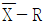
관리도에서 범위 R의 평균(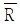
)이 1.59 이었다. 만일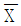
의 분산(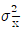
)이 0.274ㄹ k면 군간분산(σb2)은 약 얼마인가? (단, n= 5 일 때, d2=2.236이다.)- 0.181
- 0.425
- 0.581
- 0.684
(정답률: 13%)
29. 정규분포를 따르는 두 집단 A, B 각각의 모표준편차가 미지인 경우 신뢰도(1-α)로 모평균의 차이가 있는지를 검정할 경우 틀린 것은? (단, s2은 표본분산, n은 표본 수, ν는 자유도 이다.)
- 평균치 차의 검정을 하기 전에 등분산성의 검정이 필요하다.
- 등분산일 경우 검정통계량은
 이다.
이다. - 등분산의 조건에서 평균치 차에 대한 기각역은 ±t1-α/2(νA+νB) 이다.
- 등분산에 관계없이 평균치 차의 검정에 대한 귀무가설은 H0:μA = μB 로 설정한다.
(정답률: 32%)
30. 한국인과 일본인의 스포츠(축구, 농구, 야구) 선호도가 같은지 조사하였다. 각각 100명씩 랜덤추출하여 가장 좋아하는 한 가지 운동을 선택하여 분류하였더니 다음 표와 같을 때, 설명 중 틀린 것은? (단, α=0.⑤, χ0.952(2)=5.991 이다.)
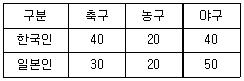
- 검정결과는 귀무가설 채택이다.
- 검정통계량(χ02)은 약 2.5397 이다.
- 검정에 사용되는 자유도는 4이다.
- 기대도수는 각 스포츠별로 선호도가 같다고 가정하여 평균을 사용한다.
(정답률: 53%)
31. 계수 및 계량 규준형 1회 샘플링 검사(KS Q 0001)의 평균치 보증 방식에서 망소특성인 경우, OC 곡선을 작성하기 위한 로트의 합격확률 L(m)의 표준정규분포에서의 좌표값 KL(m)을 구하기 위한 공식은? (단, U는 규격상한, m은 로트의 평균치,
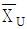
는 상한 합격 판정치, σ는 로트의 표준편차, n은 샘플의 크기이다.)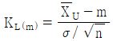
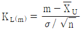
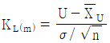
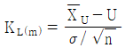
(정답률: 37%)
32. 두 변수 x, y에서 x는 독립변수, y는 그에 대한 종속변수이고 대응을 이루고 있는 표본이 n개 일 때, 이들 사이의 상관관계를 분석하는 수식으로 틀린 것은? (단, 확률변수 X의 제곱합(Sxx), 확률변수 Y의 제곱합(Syy), 공분산(Vxy), X의 분산 (Vx), Y의 분산(Vy), n은 표본의 수이다.)
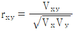
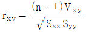
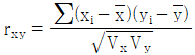
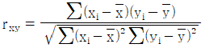
(정답률: 18%)
33. 모집단으로부터 4개의 시료를 각각 뽑은 결과의 분포가 X1~N(5, 82), X2~N(25, 42) 이고, Y = 3X1 - 2X2 일 때, Y의 분포는 어떻게 되겠는가? (단, X1, X2는 서로 독립이다.)
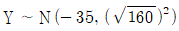
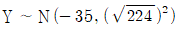
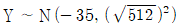
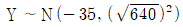
(정답률: 34%)
34. A사에서 생산하는 강철봉의 길이는 평균 2.8m, 표준편차 0.20m인 정규분포를 따르는 것으로 알려져 있다. 25개의 강철봉의 길이를 측정하여 구한 평균이 2.72m라면 평균이 작아졌다고 할 수 있는가를 유의수준 5%로 검정할 때, 기각역(R)과 검정통계량(u0)의 값은?
- R = {u ＜ -1.645}, u0 = -2.0
- R = {u ＜ -1.96}, u0 = -2.0
- R = {u ＞ 1.645}, u0 = 2.0
- R = {u ＞ 1.96}, u0 = 2.0
(정답률: 27%)
35. 계수형 샘플링 검사에서 일반적으로 로트의 크기와 샘플의 크기를 일정하게 하고, 합격판정개수를 증가시킬 때 생산자 위험과 소비자 위험에 관한 설명으로 맞는 것은?
- 생산자 위험은 감소하고, 소비자 위험은 증가한다.
- 생산자 위험은 증가하고, 소비자 위험은 감소한다.
- 생산자 위험과 소비자 위험은 모두 감소한다.
- 생산자 위험과 소비자 위험은 모두 증가한다.
(정답률: 40%)
36. 어떤 제품의 치수에 대한 설계 규격이 150±1mm 이다. 이 제품의 제조공정을 조사하여 얻어진 공정평균이 150.5mm, 표준편차가 0.5mm 일 때 이 공정의 부적함품률은?
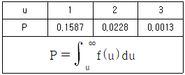
- 0.0228
- 0.0456
- 0.1600
- 0.3174
(정답률: 25%)
37. 3σ법의
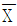
관리도에서 제1종 오류를 범할 확률은?- 0.00135
- 0.0027
- 0.01
- 0.⑤
(정답률: 47%)
38. 샘플링검사의 선택조건으로 틀린 것은?
- 실시하기 쉽고, 관리하기 쉬울 것
- 목적에 맞고 경제적인 면을 고려할 것
- 공정이나 대상물 변화에 따라 바꿀 수 있을 것
- 샘플링을 실시하는 사람에 따라 차이가 있을 것
(정답률: 47%)
39. 어떤 제품의 길이에 대하여 L-S 관리도를 만들기 위해 n=5인 샘플을 25조 택하여 각 조의 최대치(L), 최소치(S) 및 범위(R)를 구하고 각각의 평균치가 다음과 같다. L-S관리도의 CL은 약 얼마인가?
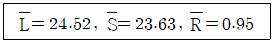
- 21.25
- 22.77
- 24.08
- 25.35
(정답률: 48%)
40. 다음의 데이터로 np관리도를 작성할 경우 관리한계는 얼마인가?
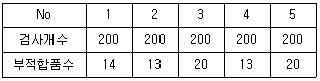
- 15±1.51
- 15±11.51
- 16±8.51
- 16±11.51
(정답률: 27%)
3과목: 생산시스템
41. 조업도(매출량, 생산량)의 변화에 따라 수익 및 비용이 어떻게 변하는가를 분석하는 기법은?
- 이동평균법
- 손익분기분석
- 선형계획법
- 순현재가치분석
(정답률: 32%)
42. 총괄생산계획에서 수요의 변동에 대응하기 위해 활용할 수 있는 대안으로 가장 거리가 먼 것은?
- 고용 및 해고
- 생산설비 증설
- 협력업체 생산
- 재고수준 조정
(정답률: 34%)
43. 기업이 ERP 시스템 구축을 추진할 때 외부전문위탁개발(Outsourcing) 방식을 택하는 경우가 많다. 이 방식의 특징과 가장 거리가 먼 것은?
- 외부전문 개발인력을 활용한다.
- ERP 시스템을 확장하거나 변경하기 어렵다.
- 개발비용은 낮으나 유지비용이 높게 소요된다.
- 자사의 여건을 최대한 반영한 시스템 설계가 가능하다.
(정답률: 50%)
44. 구매 정책을 설정함에 있어 자재의 구매 방식을 본사가 아닌 공장에서 분산 구매하게 할 때의 유리한 점은?
- 긴급 수요에 대응하기 쉬움
- 종합구매에 의한 구매비용 감소
- 대량구매에 의한 가격이나 거래조건이 유리
- 시장조사나 거래처 조사 및 구매효과 측정이 용이
(정답률: 58%)
45. MRP 시스템의 구조에서 반드시 필요한 입력요소가 아닌 것은?
- 공수계획
- 자재명세서
- 주생산일정계획
- 재고기록파일
(정답률: 48%)
46. 생산관리의 기본 기능을 크게 3가지로 분류할 경우 해당되지 않는 것은?
- 계획기능
- 통제기능
- 실행기능
- 설계기능
(정답률: 19%)
47. P-Q 곡선 분석에서 A영역에 해당하는 설비배치로 가장 적절한 것은?
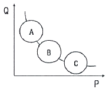
- 제품별 배치
- GT Cell 배치
- 공정별 배치
- 위치고정형 배치
(정답률: 27%)
48. 어느 자동차 제품의 매월 판매량이 다음과 같을 경우, 단순지수평활법(exponential smoothing)에 의한 11월의 판매 예측량은 약 얼마인가? (단, 10월에 대한 예측치는 386 이었으며, α=0.3를 사용한다.)(문제 오류로 가답안 발표시 3번으로 발표되었지만 확정답안 발표시 모두 정답처리 되었습니다. 여기서는 가답안인 3번을 누르면 정답 처리 됩니다.)
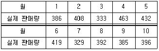
- 370.15
- 386.00
- 390.29
- 396.00
(정답률: 50%)
49. 고장을 예방하거나 조기 조치를 하기 위하여 행해지는 급유, 청소, 조정, 부품교환 등을 하는 것은?
- 설비검사
- 보전예방
- 개량보전
- 일상보전
(정답률: 24%)
50. 노동력, 설비, 물자, 공간 등의 생산자원을 누가, 언제, 어디서, 무엇을, 얼마나 사용할 것인가를 결정하는 작업계획으로 주·일 시간 단위별 계획을 수립하는 것은?
- 공정계획
- 생산계획
- 작업계획
- 일정계획
(정답률: 38%)
51. 하루 8시간 근무시간 중 일반여유시간으로 100분이 설정되었다면 여유율은 약 몇 % 인가? (단, 외경법을 이용한다.)
- 20.8%
- 26.3%
- 35.7%
- 39.4%
(정답률: 0%)
52. 공급사슬이론에서 채찍효과를 발생시키는 주원인은 수요나 공급의 불확실성에 있다. 이러한 채찍효과의 원인을 내부원인과 외부원인으로 구분하였을 때, 내부원인에 해당되지 않는 것은?
- 설계변경
- 정보오류
- 주문수량변경
- 서비스/제품 판매촉진
(정답률: 43%)
53. 재고 저장공간을 품복별로 두 칸으로 나누고, 윗칸에는 운전재고를, 아랫칸에는 재주문점에 해당하는 재고를 쌓아둠으로써, 윗칸에 재고가 없으면 재주문점에 이르렀음을 시각적으로 파악할 수 있는 방법은?
- EPQ
- 정기발주방식
- 콕(cock)시스템
- 더블빈(double-bin)법
(정답률: 48%)
54. A, B, C, D 4개의 작업 모두 공정 1을 먼저 거친 다음에 공정 2를 거친다. 최종작업이 공정 2에서 완료되는 시간을 최소화하도록 하기 위한 작업순서는?
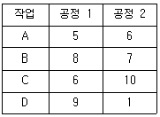
- A→C→B→D
- A→D→B→C
- C→A→B→D
- D→A→B→C
(정답률: 30%)
55. 설계시점의 속도(또는 품종별 기준속도)에 대한 실제속도에 의한 손실, 설계시점의 속도가 현상의 기술수준 또는 바람직한 수준에 비해 낮은 경우의 손실을 무엇이라 하는가?
- 편성손실
- 속도저하손실
- 초기손실
- 일시정지손실
(정답률: 50%)
56. 최적 제품조합(Product Mix)의 의미로 맞는 것은?
- 생산일정계획의 수립기법
- 총 이익을 최대화하는 제품들의 조합
- 각종 생산설비의 능력을 최대로 활용할 수 있는 생산능력의 조합
- 각종 수요예측을 통한 제품의 공정관리를 최적상태로 유지하기 위한 공정조합
(정답률: 35%)
57. A회사는 조립작업장에 대해 하루 8시간 근무시간에서 오전, 오후 각각 20분간의 휴식시간을 주고 있다. 과거의 데이터를 분석해 보면 컨베이어벨트가 정지하는 비율이 4% 이고, 최종검사 과정에 5%의 부적합품률이 발생했다. 이 경우 일간 생산량이 1000개 일 때, 피치타임(pitch time)은 약 얼마인가?
- 0.20
- 0.30
- 0.40
- 0.50
(정답률: 27%)
58. 스톱워치법과 비교한 PTS법의 장점으로 거리가 가장 먼 것은?
- 시스템 도입 초기에도 별도 전문가의 자문을 필요로 하지 않는다.
- 동작과 시간의 관계에 대한 자세한 자료에 의거하여 표준자료를 용이하게 작성할 수 있다.
- 작업자를 대상으로 직접 시간을 측정하지 않기 때문에 스톱워치에 대하여 작업자가 느끼는 불편함이 없다.
- 실제작업이 행해지는 생산현장을 보지 않더라도 작업대 배치도와 작업방법만 알면 시간을 산출할 수 있다.
(정답률: 36%)
59. JIT 시스템에서 생산현장의 상태관리를 의미하는 5S 운동이 아닌 것은?
- 정돈(seiton)
- 청결(seiketsu)
- 습관화(shitsuke)
- 단순화(simplification)
(정답률: 53%)
60. PTS(Predetermined Time Standard) 기법의 특징으로 틀린 것은?
- 작업자수행도평가(Performance fating)가 필요 없다.
- 전문적인 교육을 받은 전문가가 아니면 활용이 어렵다.
- 시간연구법에 비해 작업방법을 개선할 수 있는 기회가 적다.
- 작업동작은 한정된 종류의 기본요소동작으로 구성된다는 가정을 전제로 한다.
(정답률: 20%)
4과목: 신뢰성관리
61. 대시료 실험에 있어서의 신뢰성 척도에 관한 설명으로 틀린 것은?
- 누적고정확률과 신뢰도 함수의 합은 어느 시점에서나 항상 동일하게 1로 나타난다.
- 어떤 시점 0에서 t까지 고장확률밀도함수를 적분하면 그 시점까지의 불신뢰도 F(t)를 알 수 있다.
- 어느 정도 시간이 경과하여 고장개수가 상당히 발생하였을 때, 그 시점에서 고장확률밀도함수는 고장률 함수보다 크거나 같다.
- 어떤 시점 t와 (t+△t)시간 사이에 발생한 고장개수를 시점 t에서의 생존개수로 나눈 뒤 이것을 △t로 나눈 것을 고장률 함수 √(t)라 한다.
(정답률: 27%)
62. 그림과 같은 고장율을 갖는 부품이 400시간 이상 작동할 확률은 약 얼마인가?
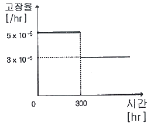
- 0.9761
- 0.9822
- 0.9887
- 0.9915
(정답률: 38%)
63. 어떤 시스템의 수리율(μ)이 0.5, 고장률(λ)이 0.09 일 때 가용도(availability)는 약 얼마인가?
- 15.3%
- 84.7%
- 93.7%
- 95.5%
(정답률: 44%)
64. 타이어 6개가 장착된 자동차는 6개의 타이어 중 5개만 작동되면 운행이 가능하다. 이 때 각 타이어의 신뢰도가 0.95로 동일하면, 자동차의 신뢰도는 약 얼마인가?
- 0.7711
- 0.8869
- 0.9512
- 0.9672
(정답률: 45%)
65. 신뢰성 시험은 실시장소, 시험의 목적, 부과되는 스트레스 크기 등에 따라 분류할 수 있다. 시험목적에 따른 신뢰성 시험의 분류가 아닌 것은?
- 신뢰성 현장시험
- 신뢰성 결정시험
- 신뢰성 인증시험
- 신뢰성 비교시험
(정답률: 14%)
66. M기기 10대에 대하여 30일간 교체 없이 수명시험을 하였더니 이 중 5대가 고장이 났으며, 이들의 고장발생이 16, 27, 14, 12, 18 일이었다. 이 기기의 평균수명은?
- 50일
- 87일
- 47.4일
- 17.4일
(정답률: 40%)
67. 수명자료가 정규분포인 경우의 고장률 함수 λ(t)의 형태는?
- 증가함수
- 일정함수
- 상수함수
- 감소함수
(정답률: 32%)
68. n개의 부품을 시험하여 고장이 r개 발생할 때까지 교체 없이 시험을 실시한 경우, MTBF의 신뢰구간을 계산하기 위한 자유도의 값은? (단, 수명분포는 지수분포를 따른다.)
- n
- 2r
- n-1
- 2r+2
(정답률: 20%)
69. 여러 부품이 조합되어 만들어진 시스템이나 제품의 전체고장률이 시간에 관계없이 일정한 경우 적용되는 고장분포로 가장 적합한 것은?
- 지수분포
- 균등분포
- 정규분포
- 대수정규분포
(정답률: 19%)
70. 기계부품이 진동에 의한 피로현상으로 파괴가 되었다. 이 때 고장원인, 고장 메커니즘 및 고장모드의 구분으로 맞는 것은?
- 고장원인 : 파괴, 고장 메커니즘 : 피로, 고장모드 : 진동
- 고장원인 : 진동, 고장 메커니즘 : 파괴, 고장모드 : 피로
- 고장원인 : 진동, 고장 메커니즘 : 피로, 고장모드 : 파괴
- 고장원인 : 피로, 고장 메커니즘 : 진동, 고장모드 : 파괴
(정답률: 32%)
71. 신뢰성 블록도와 고장나무 분석(FTA)에 대한 설명으로 틀린 것은?
- 신뢰성 블록도는 성공위주이고 고장나무 분석은 고장위주이다.
- 신뢰성 블록도의 병렬구조는 고장나무 분석의 AND 게이트에 대응된다.
- 고장나무의 OR 게이트는 입력사상 중 최소수명을 갖는 사상에 의해 출력사상이 발생한다.
- 시스템을 구성하는 각 요소의 신뢰도가 증가하면, 고장나무 분석에서 정상사상이 발생할 확률이 높아진다.
(정답률: 44%)
72. 어떤 장치의 고장수리시간을 조사하였더니 다음과 같은 데이터를 얻었다. 수리시간이 지수분포를 따른다고 할 때, 평균 수리율은 약 얼마인가?
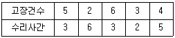
- 0.2667/시간
- 0.2817/시간
- 0.3232/시간
- 0.5556/시간
(정답률: 34%)
73. 지수분포의 확률지에 관한 설명으로 틀린 것은?
- 회귀선의 기울기를 구하면 평균고장률이 된다.
- 세로축은 누적고장률, 가로축은 고장시간을 타점하도록 되어 있다.
- 타점결과 원점을 지나는 직선의 형태가 되면 지수분포라 볼 수 있다.
- 누적고장률의 추정은 t시간까지의 고장횟수의 역수를 취하여 이루어진다.
(정답률: 30%)
74. 와이블 분포의 신뢰도함수
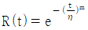
를 이용하면 사용시간 t=η 에서 m의 값에 관계없이 R(η) = e(-1), F(η) = 1-e(-1) = 0.632 임을 알 수 있다. 이 때 와이블 분포를 따르는 부품들의 약 63%가 고장 나는 시간 η를 무엇이라고 하는가?- 평균수명
- 특성수명
- 중앙수명
- 노화수명
(정답률: 47%)
75. 전자장치의 정상사용전압 V에서의 평균수명 T 와 가속전압 VA 에서의 평균수명 TA는
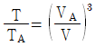
의 관계를 갖는다. VA가 200볼트 일 때 얻은 고장시간 데이터에 의해 추정된 TA가 1000시간이라면 정상사용전압 100볼트 에서의 평균수명 T는?- 4시간
- 4000시간
- 8시간
- 8000시간
(정답률: 38%)
76. 자동차가 안전하게 고속도로를 주행할 수 있는 조건을 차체엔진부, 동력전달부, 브레이크부, 운전기사 등의 하위 시스템으로 나눌 때, 자동차의 시스템은 어느 모형에 적합한가?
- 직렬 모형
- 병렬 모형
- 대기 중복
- 브리지 모형
(정답률: 27%)
77. 시점 t에서의 순간고장률을 나타낸 신뢰성 척도는?
- 불신뢰도(F(t))
- 누적고장률(H(t))
- 고장률 함수(λ(t))
- 고장확률밀도함수(f(t))
(정답률: 27%)
78. 신뢰성 샘플링 검사에서 지수분포를 가정한 신뢰성 샘플링 방식의 경우 λ0와 λ1을 고장률 척도로 하게 된다. 이 때 λ1을 무엇이라고 하는가?
- ARL
- AFR
- LTFR
- AQL
(정답률: 32%)
79. A제품의 파괴강도는 50kg/cm2 이상이다. 파괴강도의 크기가 평균 40kg/cm2이고, 표준편차가 10kg/cm2의 정규분포를 따른다면 이 제품이 파괴될 확률은? (단, z는 표준정규분포의 확률변수이다.)
- Pr(z＞1)
- Pr(z＞2)
- Pr(z≤1)
- Pr(z≤2)
(정답률: 48%)
80. 고장률이 λ로 동일한 n개의 부품이 병렬로 연결되어 있을 때 시스템의 평균수명을 표현한 식은?
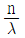
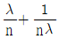
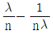
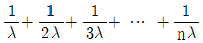
(정답률: 53%)
5과목: 품질경영
81. 생산활동이나 관리활동과 관련하여 일상적 또는 정기적 실시하는 계측과 가장 거리가 먼 것은?
- 생산설비에 관한 계측
- 자재·에너지에 관한 계측
- 작업결과나 성적에 관한 계측
- 연구·실험실에서의 시험연구 계측
(정답률: 14%)
82. A.R Tenner는 고객만족을 충분히 달성하기 위해서 “고객의 목소리에 귀를 기울이는 것”을 단계 1, “소비자의 기대사항을 완전히 이해하는 것”을 단계 2로 정의하였다. 다음 중 단계 3인 완전한 고객 이해를 위한 적극적 마케팅 방법이 아닌 것은?
- 시장 시험(market test)
- 벤치마킹(benchmarking)
- 판매기록 분석(sales record analysis)
- 포커스 그룹 인터뷰(focus group interview)
(정답률: 20%)
83. 6 시그마에 관한 설명으로 가장 거리가 먼 것은?
- 6 시그마는 DMAIC 단계로 구성되어 있다.
- 게이지 R&R은 개선(Improve) 단계에 포함된다.
- 프로세스 평균이 고정된 경우 3 시그마 수준은 2700 rpm 이다.
- 백만개 중 부적합품수를 한자리수 이하로 낮추려는 혁신운동이다.
(정답률: 38%)
84. 품질, 원가, 수량·납기와 같이 경영 기본요소별로 전사적 목표를 정하여 이를 효율적으로 달성하기 위해 각 부문의 업무분담 적정화를 도모하고 동시에 부문 횡적으로 제휴, 협력해서 행하는 활동은?
- 생산관리
- 기능별관리
- 설비관리
- 부문별관리
(정답률: 0%)
85. 히스트로그램의 작성 목적으로 거리가 가장 먼 것은?
- 공정능력을 파악하기 위해
- 데이터의 흩어진 모양을 알기 위해
- 부적합 대책 및 개선효과를 확인하기 위해
- 규격치와 비교하여 공정의 현황을 파악하기 위해
(정답률: 48%)
86. A.V. Feigenbaum은 실패비용을 사내·외 실패비용으로 분류하였다. 사내 실패비용 항목으로 짝지어진 것은?
- 자재부적합 유실비용, 클레임 비용
- 폐기품 손실제조경비, 클레임 비용
- 폐기품 손실제조경비, A/S 환품비용
- 폐기품 손실제조경비, 자재부적합 유실비용
(정답률: 40%)
87. 품질관리시스템은 PDCA 사이클로 설명될 수 있다. PDCA 사이클에 관한 내용으로 틀린 것은?
- Plan – 목표달성에 필요한 계획 또는 표준의 설정
- Do – 계획된 것의 실행
- Check – 실시결과를 측정하여 해석하고 평가
- Action – 리스크와 기회를 식별하고 다루기 위하여 필요한 자원의 수립
(정답률: 47%)
88. 설계품질이 결정된 후 제품의 제조단계에서 설계품질을 제품화함으로써 실현된 품질은?
- 적합품질
- 사용품질
- 시장품질
- 목표품질
(정답률: 20%)
89. 표준의 구성 중 표준의 일부로 볼 수 없는 것은?
- 비고
- 해설
- 보기
- 부속서
(정답률: 0%)
90. 커크패트릭(Kirkpatrick)이 제안한 품질비용 모형에서 예방코스트의 증가에 따른 평가코스트와 실패코스트의 변화를 설명한 내용으로 가장 적절한 것은?
- 평가코스트 감소, 실패코스트 감소
- 평가코스트 증가, 실패코스트 증가
- 평가코스트 감소, 실패코스트 증가
- 평가코스트 증가, 실패코스트 감소
(정답률: 44%)
91. Cp = 1.33이고, 치우침이 없다면, 평균 μ에서 규격한계(U 또는 L)까지의 거리는 약 몇 σ 인가?
- 2σ
- 3σ
- 4σ
- 6σ
(정답률: 27%)
92. 사내표준화의 추진방법으로 경영방침으로서 사내표준화 실시의 명시 후의 순서로 맞는 것은?
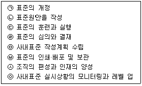
- ㉦→㉤→㉡→㉣→㉥→㉢→㉧→㉠
- ㉦→㉤→㉣→㉥→㉡→㉢→㉧→㉠
- ㉦→㉤→㉡→㉥→㉣→㉢→㉧→㉠
- ㉦→㉤→㉣→㉡→㉥→㉢→㉧→㉠
(정답률: 27%)
93. 제조물 책임(PL)법에 대한 설명으로 틀린 것은?
- 기업의 경우 PL법 시행으로 제조원가가 올라갈 수 있다.
- PL법의 적용으로 소비자는 모든 제품의 품질을 신뢰할 수 있다.
- 제품에 결함이 있을 때 소비자는 제품을 만든 공정을 검사할 필요가 없다.
- 제품엔 결함이 없어야 하지만, 만약 제품에 결함이 있으면 생산, 유통, 판매 등의 일련의 과정에 관여한 자가 변상해야 한다.
(정답률: 34%)
94. 국제표준화기구(ISO)에 대한 설명으로 틀린 것은?
- ISO는 1946년 10월 14일 설립되었다.
- ISO의 공식 언어는 영어, 불어 및 러시아어 이다.
- ISO의 회원은 정회원, 준회원 및 간행물 구독회원으로 구분된다.
- ISO의 정회원은 한 국가에서 2개의 기관까지 회원자격을 획득할 수 있다.
(정답률: 36%)
95. 신 QC 7가지 도구 중 복잡한 요인이 얽힌 문제에 대하여 그 인과관계 및 요인 간의 관계를 명확히 함으로써 적절한 해결책을 찾는데 기여하는 방법은?
- 연관도법
- PDPC법
- 계통도법
- 매트릭스도법
(정답률: 25%)
96. TQM 기법으로서 벤치마킹의 장점으로 거리가 가장 먼 것은?
- 자원을 적절히 이용할 수 있고, 비용이 최소화된다.
- 벤치마킹을 통하여 경쟁에 유리한 입지를 유지할 수 있다.
- 최우수 기업의 성과를 통해 내부 구성원간의 경쟁만을 촉진한다.
- 경쟁자와 대등하거나 그 이상의 기능을 수행할 수 있어 시장 경쟁에 유리하다.
(정답률: 40%)
97. 품질시스템이 잘 갖추어진 회사는 끊임없는 개선이 이루어지는 것을 보장해야 한다. 끊임없는 개선에 대한 설명 중 틀린 것은?
- 기업에서 개선할 점은 언제든지 있다.
- 품질개선은 종업원의 창의성을 필요로 한다.
- P – D – C – A의 개선과정을 feed-back 시키는 것이다.
- 품질개선은 반드시 표준화된 기법을 적용하여야 한다.
(정답률: 48%)
98. 산업표준을 적용하는 지역과 범위에 따라 분류할 때 해당되지 않는 것은?
- 잠정표준
- 사내표준
- 단체표준
- 국가표준
(정답률: 42%)
99. 길이가 각각 X1~N(5.00, 0.252), X2~N(7.00, 0.362) 및 X3~N(9.00, 0.492)인 3부품을 임의의 조립방법에 의해 길이로 직렬연결 할 때 (X1+X2+X3)의 공차는 ±3σ로 잡고, 조립시의 오차는 없는 것으로 한다면 이 조립 완제품의 규격은 약 얼마인가? (단, 단위는 cm 이다.)
- 21±0.657
- 21±1.048
- 21±1.972
- 21±3.146
(정답률: 14%)
100. J.M. Juran & Gryna에 의해 분류된 작업자오류의 유형 중 작업자가 주의를 게을리한 즉, “부주의로 인한 오류”는 인간 오류의 중요한 원천이 되고 있다. 이러한 오류의 특징을 정의한 것으로 거리가 가장 먼 것은?
- 비고의성(unwitting)
- 불가피성(unavoidable)
- 무의도성(unitentional)
- 불예측성unpredictable)
(정답률: 32%)
요인 A의 제곱합은 (2^2 + 3^2 + 1^2 + 4^2)/434.7826 - (2+3+1+4)^2/(10*434.7826)^2 = 1.24 이다.
이는 각 조건에서의 품목 수가 같을 때, 부적합품의 비율이 조건 A에 따라 달라지는 것을 고려한 결과이다. 즉, 요인 A가 부적합품에 영향을 미치는 정도를 나타내는 것이다.